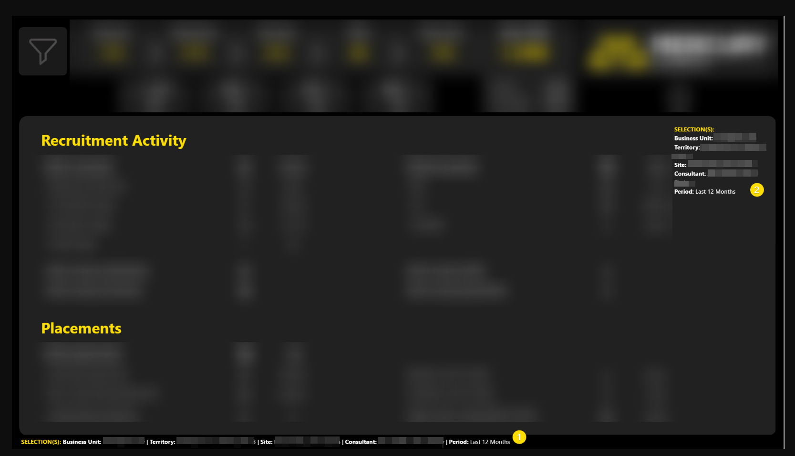
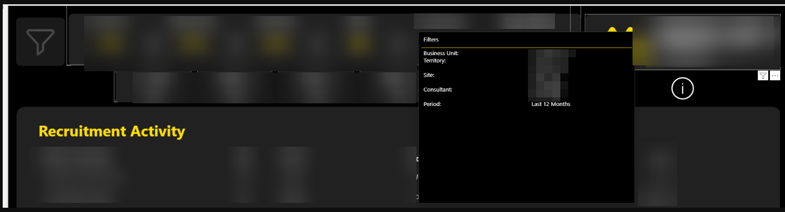
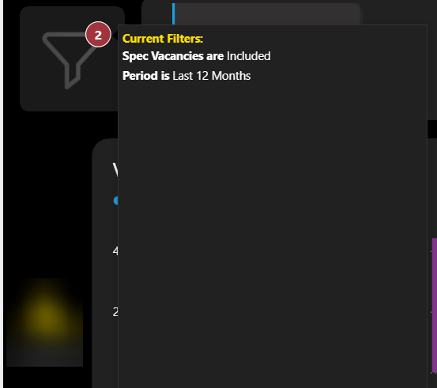

Context
All of our reports give the end user the ability to filter the data down in various ways using different slicer options. We have built both a basic filter pane (with the most common options) and an advanced filter pane. These different panes are navigated to using buttons and bookmarks in the top of each page of the report.
It would be good to be able to display to the end user what filter options have been applied on-screen or easily on-demand without the user having to navigate back to the pane to remind themselves of this.
Below is a write-up of the options investigated to achieve this:
Objective
The objective of this spike was to provide design options to enable an Analytics report user to identify what slicer selections have been made at any given time. As an alternative an on-demand option such as a tooltip should also be considered.
The key thing is that we want the list of options to be presented to the user without them having to go through each of the filters in turn to ascertain this information.
Scope
The following options were not considered as they do not meet any part of the brief:
- Dynamically altering the slicer titles / real estate in real time to show what has been selected per slicer.
- Substituting the native drop-down slicers for third party slicers which record the options selected per slicer.
Outcome
All options require at least one DAX measure to capture slicer state.
| Option | Mechanism | Pros | Cons | Implementation Effort (per report) |
|---|---|---|---|---|
| 1: Dynamic DAX String | Dynamic DAX builds a text string based on slicer selection. | Already proven. Highly customisable: many options exist as to how to add this to the reports |
Can be long and ugly. Requires real estate on each page of report. Adds permanent "noise". |
Medium |
| 2: Tooltip Page | Create a tooltip page per report. Create a table / card and add a DAX measure to this (similar DAX to Option 1). Then add a transparent card to each report page from which to action this tooltip. |
Clean UI. Information on demand only. |
Information hidden by design. Requires a deliberate hover action to be viewed. Conflicts if user already hovering over a visual's tooltip. Height of tooltip is fixed so needs to be large enough to include all potential selections. |
Medium |
| 3: Button plus Visual Summary Panel | Dynamic DAX builds a text string or a table based on slicer selection. Recorded on report page in a hidden panel which can be viewed by pressing a button. |
No need for extra real estate. Unlike tooltip option, selections can be seen even if cursor is moved. |
Additional bookmark and associated maintenance. More development required than the other two options. |
High |
This screenshot below shows two versions of Option 1, a horizontal implementation and then a vertical implementation:

This second screenshot shows an example of Option 2. The user has hovered over the logo and the tooltip appears detailing the filters "in play":

Remaining Questions
- Goal: Is it more important to have the slicer selections always visible or to maximise real estate for visuals?
- User Behaviour: How often do users select multiple options? And how many different options do they usually select?
The user behaviour question influences whether Option 1 is genuinely feasible. If the number of options the user chooses is low, this will be a more attractive option as the "noise" will be low. It is also the only option that meets the requirement of having the information "on-screen".
Recommendation
Option 2 is the safest way to proceed given current unknowns around user behaviour with Option 1 a better alternative if slicer selection is consistently low.
What Happened Next?
The team went ahead with an improved version of option 2 (tooltip plus visual indicator on hover) where the tooltip was generated from the funnel icon button on the left hand side of the reports which is used to open the filter pane.
A red circle was added to the funnel with a count showing how many active selections had been made being visible at all times. And then on hover, the list of slicers filtered (and their values) was shown to the user:
